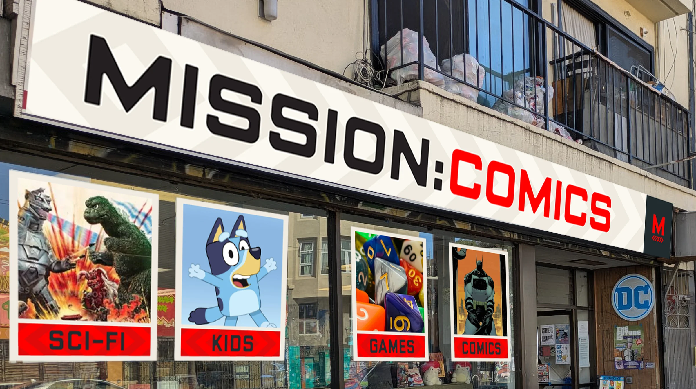
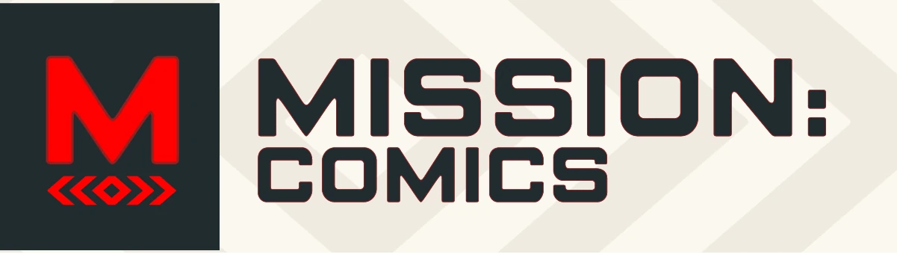
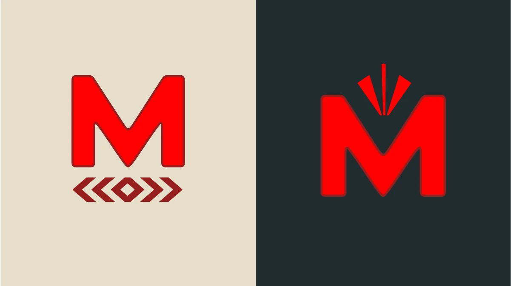
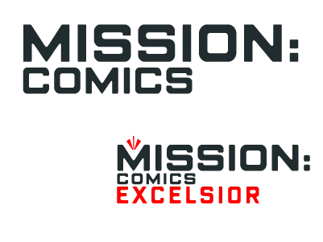
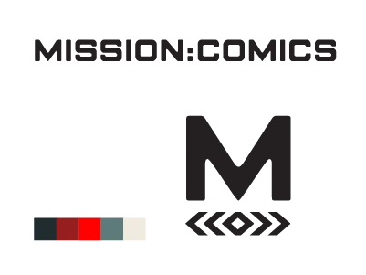
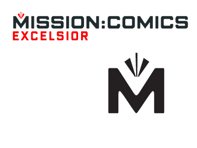
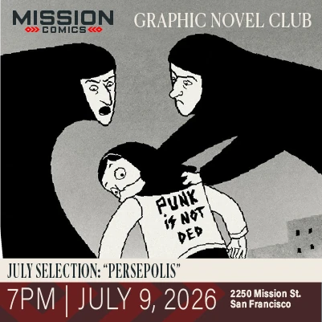

Mission: Comics Rebrand

PROBLEM: One shop becoming two. The old logo couldn't carry a second neighborhood or read on a phone.
SOLUTION: Rebuilt the identity as one brand for two locations. Rooted in the city, readable on a phone, colon intact.
ROLE: Fractional Creative Director

How We Did It
Started with the street, not the logo
Studied the Excelsior and how it differs from the Mission before drawing anything. The mark had to feel native, not imported.
Phone first, one color
If it didn't read at thumbnail size or hold up in vinyl, it didn't ship.
One brand, two addresses
A shared mark with a lockup for each location. Same store, different street.





Impact
One identity that works across both locations
Reads on a phone, a window decal, and a storefront sign
Templates and signage direction the owner can run himself after handoff